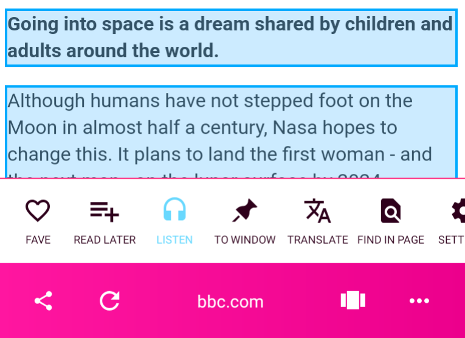

Fishpowered updated!
Here are some highlights…
Listen to your favourite websites on the move!

Simply visit your favourite site, press the "Listen" button in the page menu, and select the paragraph of text to start reading from (highlighted in blue).
You can then turn the screen off and control playback with the media controls on your headphones.
Improvements to converting units in recipes

Better support for cups, fractional numbers and more.
Simply select the amount with the unit and Fishpowered will convert it for you!
Note: this won't work with certain pages opened from Google search results (Google AMP).
Please let us know if you have any feedback or suggestions! You can find the feedback form in the browser settings.